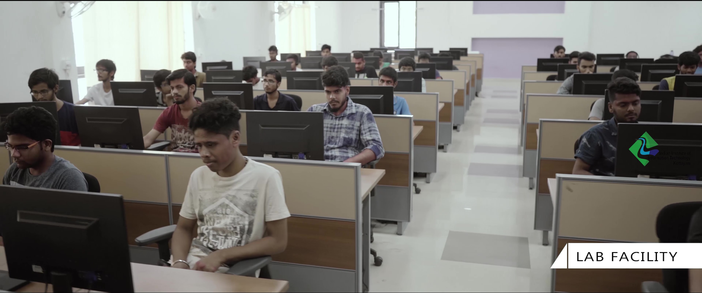

B.Tech in Computer Science And Engineering With Specialisation in Cyber Security
Cyber Security is necessary as it protects from data breaches, threats, attacks and damages in various organizations and Industries. Cyber security offers cutting-edge security solutions and services across a wide range of sectors such as Software and Internet Services, financial services, Government sectors, Education, Healthcare, Industrial Automation, Energy and Utilities, Manufacturing, Retail and Wholesale sectors. Cybersecurity is crucial to the success of the global digital economy. The customers should have complete trust in the security of data, systems, products or the services offered by the organizations/ Industry only then they will actively support Digital Transformation. Therefore, organizations and industries face a huge demand for specialists and trained cybersecurity professionals with technical expertise to defend mission-critical computer systems, networks, and applications against cyberattacks. Cybersecurity as a career requires thinking quickly and strategically to ward off data breaches and network takeovers. The B.Tech programme in CSE with specialization in Cyber security aims to have defensive and offensive techniques with a good balance between theoretical, practical and industrial aspects. The programme starts with fundamental Computer Science and Engineering courses, the initial four semesters are focused on creating a strong Computer Science foundation. The higher semesters designed with specialized courses in Cyber Security and Digital Forensics which enable students to identify, resolve and prevent the advanced Cyber Security challenges.


Admission
Admission to the B.Tech/B.Tech-MS programme will be based on performance in the Joint Entrance Examination (JEE)/Main conducted by National Testing Agency(NTA) (subject to change if any ordered by Ministry of Education, Govt. of India) through the counselling under JoSAA/CSAB
The number of seats in each branch of the B.Tech/B.Tech-MS programme for which admission is to be made will be decided by its Academic Advisory Committee/Senate. Seats are reserved for candidates belonging to the Scheduled Castes, Scheduled Tribes, Other Backward Classes, EWS Category and Physically challenged candidates as per the guidelines set by the Government of India.
(1) The fee approved for the BTech program(2022 admission) is as follows.
Reporting Instructions for JoSAA/CSAB/DASA Admission 2022 Click here
The detailed curriculum and regulations can be found here:
The number of seats in each branch of the B.Tech/B.Tech-MS programme for which admission is to be made will be decided by its Academic Advisory Committee/Senate. Seats are reserved for candidates belonging to the Scheduled Castes, Scheduled Tribes, Other Backward Classes, EWS Category and Physically challenged candidates as per the guidelines set by the Government of India.
(1) The fee approved for the BTech program(2022 admission) is as follows.
Reporting Instructions for JoSAA/CSAB/DASA Admission 2022 Click here
The detailed curriculum and regulations can be found here:
insert_link
B.Tech Cyber Security Curriculum